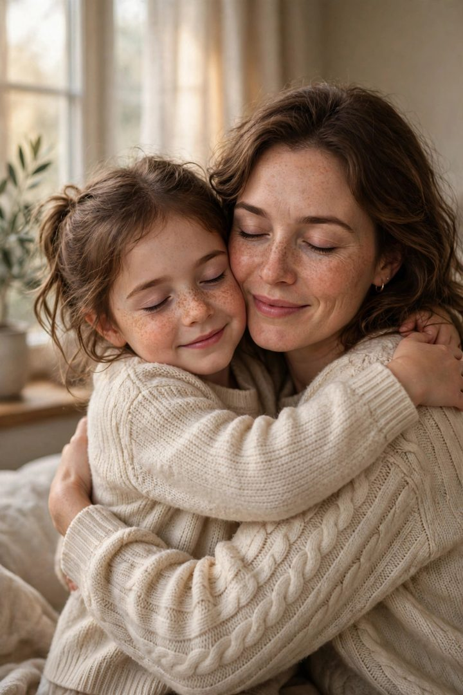
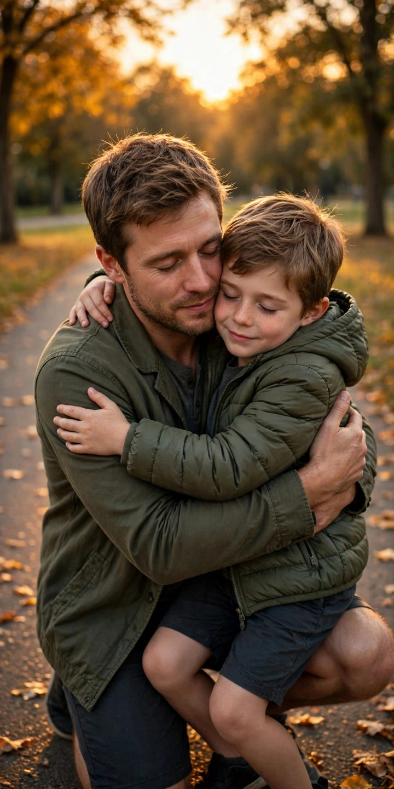

Hug My Younger Self
The most emotional AI photo trend of the year: you, as you are today, hugging the child you used to be. People post it with a few honest lines to their younger self — and it stops the scroll every single time.


What you need
One clear photo of yourself today. A childhood photo of you too, if you have one — it makes the little version look much more like you.
Copy-paste prompts
Create a heartwarming photo of me as I am now warmly hugging a young child version of myself — the same face as a 7-year-old, same features. Soft window light, tender and realistic, like a real family photograph.
Using my photo and my childhood photo, make one warm photograph where adult me is kneeling and hugging little me. Match both faces faithfully, golden-hour light, emotional and photorealistic.
Show me today standing beside the child version of me, holding hands and smiling at the camera, in the kind of place I grew up. Photorealistic, warm, nostalgic.
Step by step
- Upload your clearest recent photo (and a childhood one if you have it).
- Paste a prompt and generate — emotion lives in the details, so check hands and faces.
- Write the caption to little you — two honest lines beat a long speech.
Why it works
- It's not about the AI — it's about the sentence you write under it. Keep it true and short.
- Softer light and simple backgrounds make it feel like a memory, not an edit.